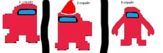

О персонаже
Доброфайнер - это персонаж, который был создан 15 декабря 2020 года. Он ассоциируется с играми “Among Us” и “Aground”, а также имеет связь с aground через
Dobrofiner Mod. В 2023 году для Доброфайнера был создан спрайт, который добавил ему визуальное представление. Персонаж обладает уникальными способностями,
такими как бессмертие и способность лечить раны, что делает его особенным в игровом мире.
Изночально, он был связан с Among us, но теперь нет и он был Добрым импостером но не импостером.

Способности
- Бессмертие
- Исцеление ран
- Магические изобретения
- Мудрость и интеллект
История
Истории можно найти здесь